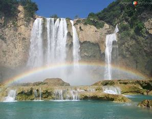
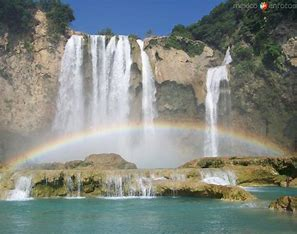
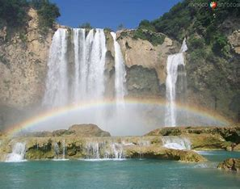

Esta impresionante cascada forma pozas de color verde turquesa que son ideales para nadar. La mejor época para visitarla es durante las temporadas de lluvia y Semana Santa, debido a que fuera de temporada la cascada pierde potencia y no luce con todo su esplendor.
